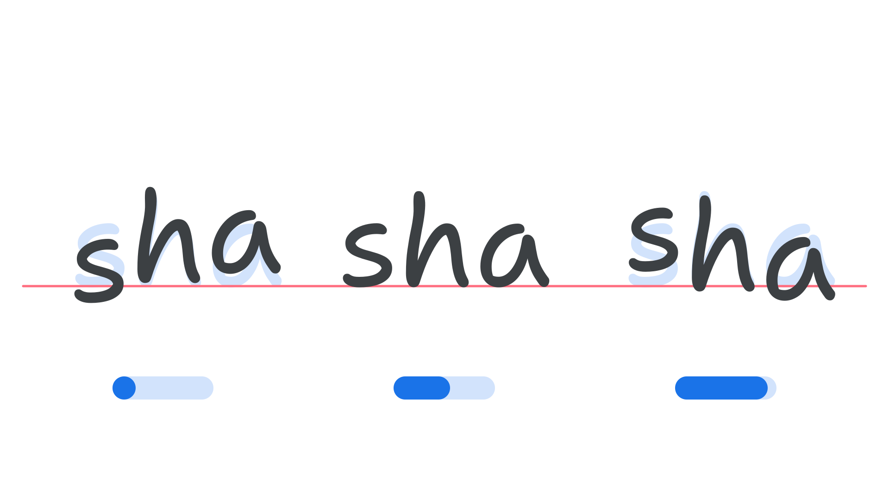

Bounce axis (BNCE)
By Google Fonts Knowledge contributors · Google Fonts Knowledge.
Original article · Source on GitHub · CC BY-SA 4.0. Text, illustrations and existing credits reproduced from the licensed Knowledge repository. Open Shelf adapted the layout and links; these adaptations are also CC BY-SA 4.0. No endorsement implied.
“Bounce” (BNCE in CSS) is an axis found in some variable fonts that can be used to reposition letterforms vertically, away from the baseline, creating a more handwritten or organic style.
The Google Fonts CSS v2 API defines the axis as:
| Default: | Min: | Max: | Step: |
|---|---|---|---|
| 0 | -100 | 100 | 1 |

Typeface: Shantell Sans
How the letters bounce will relate to each typeface's needs or concept. For example, in Shantell Sans, adjusting the axis to its minimum value shifts the “s” character down, but the “a” character up; the “h” character moves only slightly in each direction. This semi-unpredictable behaviour results in the type appearing more like handwriting, and the effect can be further exaggerated by manipulating other axes (in the case of Shantell Sans, Informality (INFM) and Spacing (SPAC) in tandem.